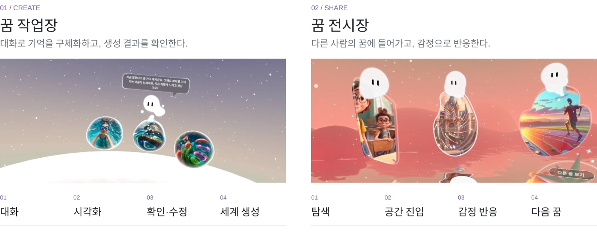
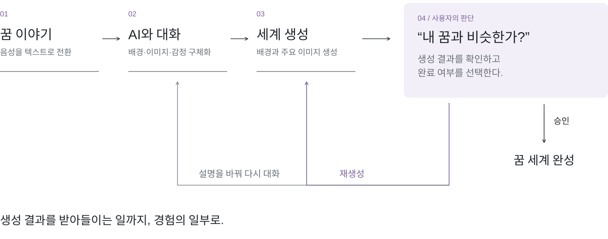
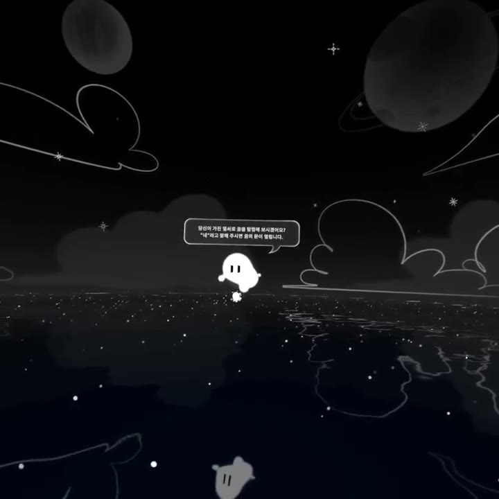
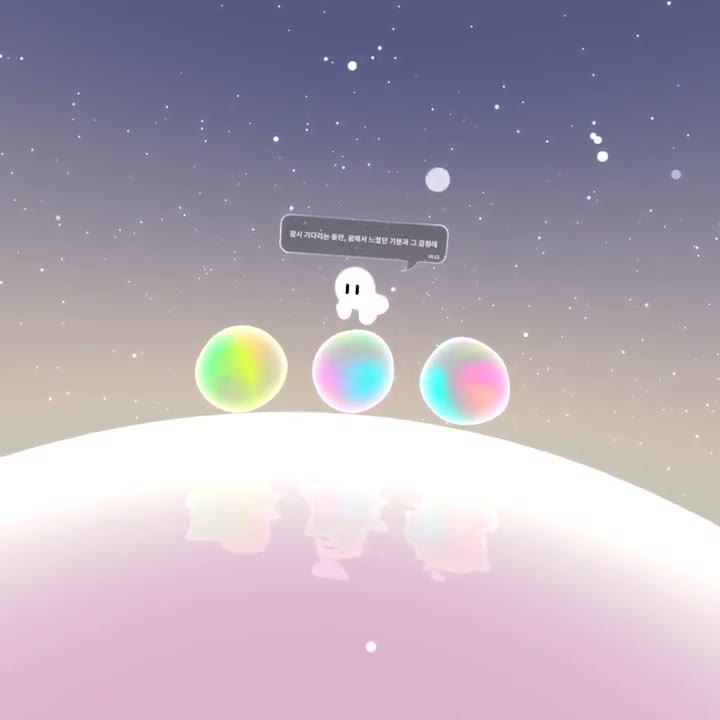
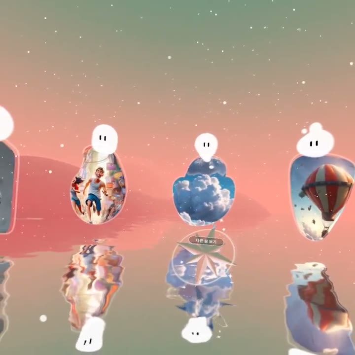
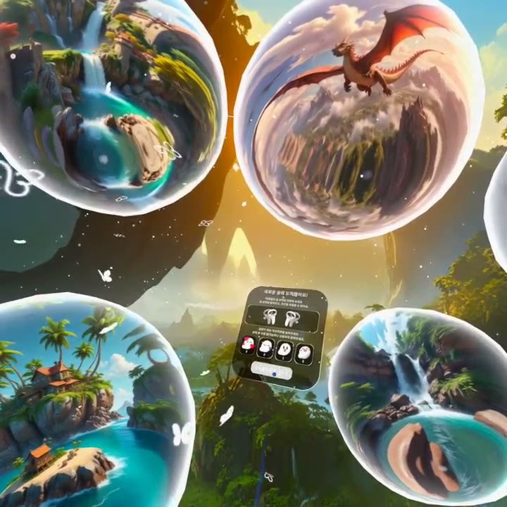

제안부터 완료까지,
프로젝트의 전체 흐름을 맡았다.
단편적인 꿈의 기억을 생성 요청과 공유 가능한 경험으로 연결해야 함
제안·선정부터 완료까지 PM, 전체 시나리오·역할 분배·제작 요구사항 조율
대화·생성·사용자 확인과 전시 경험을 나누고 하나의 흐름으로 연결
꿈 작업장·전시장 VR 결과물과 실행 영상. 운영 성과는 추가 확인 중
프로젝트 제안 단계부터 PM으로 참여하고 선정 과정 진행
사용자의 시작부터 종료까지 전체 시나리오 설계
설계와 제작을 연결하고 프로젝트 완료까지 진행
꿈은 처음부터
명확한 생성 요청이 아니다.
개인의 꿈은 단편적인 장면과 감정으로 남습니다. 바로 이미지를 생성하는 것에 앞서 기억을 구체화하고, 결과가 자신의 꿈에 맞는지 판단하는 경험을 구성했습니다.
만드는 사람
기억을 말로 꺼내고, 생성 결과를 확인하고, 필요하면 다시 설명할 수 있어야 합니다.
경험하는 사람
다른 사람의 꿈을 탐색하고, 그 공간에 들어가 감정으로 반응할 수 있어야 합니다.
생성의 앞뒤에,
구체화와 판단의 단계를 둔다.

꿈을 단계적으로 말하고 생성 결과를 확인하는 과정이 있으면, 참여자가 자신이 원하는 경험을 구체화하는 데 도움이 될 수 있다.
배경 · 주요 이미지 · 감정
결과를 확인하고 수정하는 흐름
탐색 · 진입 · 반응
꿈 작업장은 만들기와 확인, 꿈 전시장은 탐색과 공유에 초점을 맞췄습니다. 두 공간을 연결해 개인의 생성 경험이 다른 사람의 참여로 이어지도록 설계했습니다.
경험 단계마다,
팀이 제작할 산출물을 연결했다.
10인 팀에서 대화 구조·프롬프트 실험·UI/UX를 설계하고, 역할별 업무 분배와 디자인·개발 요구사항을 정리했습니다. 경험 흐름을 제작 단위로 구체화하는 역할을 맡았습니다.
표를 좌우로 밀어 전체 내용을 볼 수 있습니다.
| 경험 단계 | 설계 범위 | 협업 산출물 |
|---|---|---|
| 대화 | 질문 순서와 사용자 흐름 | 대화 스크립트 · 시나리오 |
| 생성 | 프롬프트와 확인·재생성 분기 | 생성 요구사항 · 승인 흐름 |
| 전시 | 탐색·진입·반응 | 작업장 · 전시장 UI/UX |
| 진행 조율 | 역할별 업무 연결 | 디자인·개발 요구사항 정리 |
대화의 질문 순서를 시나리오로 구체화하기
대화 시나리오 설명
꿈 작업장의 대화는 배경과 장면을 떠올리는 단계에서 시작해 주요 이미지와 감정을 구체화하고, 자신의 삶과 연결하는 흐름으로 구성했습니다. 전체 시나리오를 대화 스크립트로 풀어내고, 프롬프트 실험과 UI/UX 설계에 연결했습니다.
생성 이후에도 사용자가 결정하는 분기 두기

승인·재생성 흐름 설명
대화에서 정리한 내용을 바탕으로 세계를 생성한 뒤, 사용자가 자신의 꿈과 비슷한지 확인하는 단계를 설계했습니다. 승인하면 꿈 세계를 완성하고, 재생성을 선택하면 설명을 바꿔 다시 대화하는 흐름입니다. AI의 출력 이후에 사용자의 확인과 다음 행동이 이어지도록 구성했습니다.
작업장·전시장 구현 범위
만드는 흐름과 감상하는 흐름을 구분하기
꿈 작업장은 대화·시각화·확인과 수정·세계 생성, 꿈 전시장은 탐색·공간 진입·감정 반응·다음 꿈으로 이어집니다. 전시장에서는 입장할 때 제시되는 다섯 꿈을 탐색하고 선택한 공간을 경험하도록 구성했습니다. 개인 보관함과 지속적 공유는 후속 구상으로 남겨, 구현한 전시 경험과 구분했습니다.
전체 시나리오를 팀의 제작 단위로 나누기
PM으로 전체 경험을 맡고, 대화 스크립트·생성 요구사항·승인 흐름·작업장과 전시장 UI/UX를 제작 단위로 정리했습니다. 10인 팀의 역할별 업무를 분배하고 디자인·개발 요구사항을 조율했습니다. 앞의 표는 경험 단계별로 연결한 작업과 협업 산출물입니다.
DREAMUS / 대화 · 생성 · 전시장 탐색 · 세계 진입
시나리오가 실제 화면에서
어떻게 이어지는가.
전체 시나리오의 주요 단계를 실제 실행 영상과 연결했습니다. 대화에서 꿈의 표현을 만들고, 전시장에서 선택한 세계에 들어가는 흐름을 각각 확인할 수 있습니다.

01 / 대화와 안내 ↗
가이더와 참여자의 상호작용으로 시작하는 경험
단계별 실행 영상 보기
02 / 꿈 구슬 ↗
대화에서 꿈의 시각적 표현으로 이어지는 화면
단계별 실행 영상 보기
03 / 전시장 탐색 ↗
여러 꿈을 둘러보고 선택하는 경험
단계별 실행 영상 보기
04 / 진입과 반응 ↗
선택한 꿈 공간에 들어가 반응하는 흐름
단계별 실행 영상 보기기존 프로젝트 폴더의 단계별 실행 영상. 영상은 구현 동작을 보여주며 사용자 테스트나 이용 성과 자료는 아닙니다.
꿈 작업장과 전시장,
하나의 VR 경험으로.
대화와 탐색을 연결한 VR 결과물
문화체육관광부 · 한국문화예술위원회
메타버스 예술활동 지원사업
VR 결과물과 쇼릴, 대화·생성 흐름 및 협업 산출물로 정리했습니다. 팀 규모는 협업 맥락이고, 사업 선정은 선정 결과입니다. 사용자 지표나 사업 지표 개선과는 구분합니다.
참여자가 생성 결과를 판단하는 과정에서 어디서 막히는지, 수정과 재생성의 흐름이 실제로 도움이 되는지 확인할 필요가 있습니다.